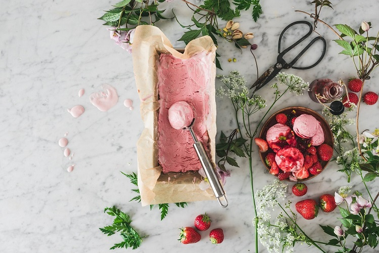

Ice Cream Recipe

Discover how easy it is to make delicious homemade ice cream that rivals what you'd stand in line for at the best ice cream shops.
Once you learn the basics, you can turn out your own small-batch artisanal frozen desserts (you could totally call it that)
in any flavor imaginable. Get ready, here's how to make ice cream at home.
Ingredients
1 tablespoon vanilla extract or 1 vanilla bean split in half lengthwise or
Optional: 2 cups of add-ins – soft brownies, cookies, and blondies work great
Instructions
Pour 1 cup of the cream into a saucepan and add the sugar, salt. Scrape the seeds of the vanilla bean into the pot and then add
the vanilla pod to the pot. Warm the mixture over medium heat, just until the sugar dissolves. Remove from the heat and add the remaining
cream, milk, and vanilla extract (if using extract). Stir to combine and chill in the refrigerator.
When ready to churn, remove the vanilla pod, whisk mixture again and pour into ice cream maker.
Churn according to the manufacturer’s instructions. Transfer the finished ice cream to an airtight container
and place in the freezer until ready to serve. Enjoy!